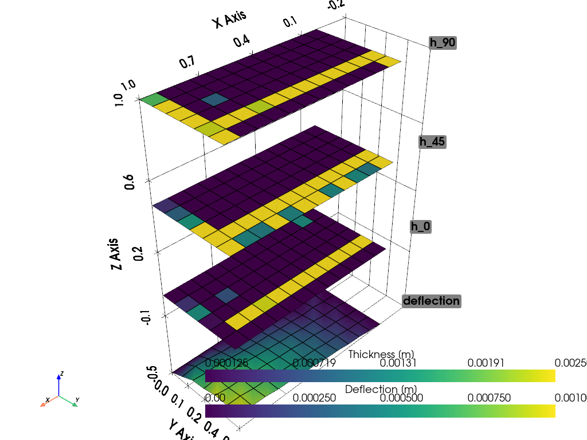

Tutorial: Ply tailoring using SLSPQ for a simply-supported plate under normal load#
Date: 4 February 2026
Author: Saullo G. P. Castro
Cite this tutorial as:
Saullo G. P. Castro. (2026). General-purpose finite element solver based on Python and Cython (Version 0.7.0). Zenodo. DOI: https://doi.org/10.5281/zenodo.6573489.
Installing required modules#
[1]:
!python -m pip install numpy pyvista pymoo scipy pyfe3d > tmp.txt
DEPRECATION: Loading egg at /Users/saullogiovanip/miniconda3/lib/python3.13/site-packages/panels-0.5.0-py3.13-macosx-11.1-arm64.egg is deprecated. pip 25.1 will enforce this behaviour change. A possible replacement is to use pip for package installation. Discussion can be found at https://github.com/pypa/pip/issues/12330
DEPRECATION: Loading egg at /Users/saullogiovanip/miniconda3/lib/python3.13/site-packages/tuduam-2026.3-py3.13.egg is deprecated. pip 25.1 will enforce this behaviour change. A possible replacement is to use pip for package installation. Discussion can be found at https://github.com/pypa/pip/issues/12330
[2]:
# %load opt-lightweight-smeared-deflection-slsqp-quarter.py
import numpy as np
import pyvista as pv
from pymoo.core.problem import ElementwiseProblem
from scipy.optimize import minimize as scipy_minimize
from scipy.optimize import Bounds
from scipy.sparse.linalg import spsolve
from scipy.sparse import coo_matrix
from pyfe3d.shellprop import ShellProp
from pyfe3d import Quad4, Quad4Data, Quad4Probe, INT, DOUBLE, DOF
def get_Q_matrix(E1, E2, nu12, G12, G13, G23, theta_deg):
"""
Calculate the transformed reduced stiffness matrix Q_bar for a given angle.
"""
nu21 = nu12 * E2 / E1
denom = 1 - nu12 * nu21
Q11 = E1 / denom
Q22 = E2 / denom
Q12 = nu12 * E2 / denom
Q66 = G12
c = np.cos(np.radians(theta_deg))
s = np.sin(np.radians(theta_deg))
c2 = c**2; s2 = s**2; c4 = c**4; s4 = s**4
Q_bar_11 = Q11*c4 + 2*(Q12 + 2*Q66)*s2*c2 + Q22*s4
Q_bar_22 = Q11*s4 + 2*(Q12 + 2*Q66)*s2*c2 + Q22*c4
Q_bar_12 = (Q11 + Q22 - 4*Q66)*s2*c2 + Q12*(s4 + c4)
Q_bar_66 = (Q11 + Q22 - 2*Q12 - 2*Q66)*s2*c2 + Q66*(s4 + c4)
Q_bar_44 = G23 * c2 + G13 * s2
Q_bar_55 = G13 * c2 + G23 * s2
Q_bar_45 = (G13 - G23) * c * s
Q_bar = np.array([
[Q_bar_11, Q_bar_12, 0, 0, 0, 0],
[Q_bar_12, Q_bar_22, 0, 0, 0, 0],
[0, 0, 0, 0, 0, 0],
[0, 0, 0, Q_bar_44, Q_bar_45, 0],
[0, 0, 0, Q_bar_45, Q_bar_55, 0],
[0, 0, 0, 0, 0, Q_bar_66]
])
return Q_bar
class SmearedPlateOptimization(ElementwiseProblem):
def __init__(self, nx, ny, a, b, load_val, max_deflection, h_min, h_max, mat_data):
self.nx = nx
self.ny = ny
self.n_elems = (self.nx - 1)*(self.ny - 1)
self.a = a
self.b = b
self.load_val = load_val
self.max_deflection = max_deflection
self.rho = mat_data['rho']
# Pre-calculate Base Q matrices
E1, E2 = mat_data['E1'], mat_data['E2']
nu12, G12 = mat_data['nu12'], mat_data['G12']
G13, G23 = mat_data['G13'], mat_data['G23']
num_orientations = 3
self.Q0 = get_Q_matrix(E1, E2, nu12, G12, G13, G23, 0)
self.Q90 = get_Q_matrix(E1, E2, nu12, G12, G13, G23, 90)
self.Q45p = get_Q_matrix(E1, E2, nu12, G12, G13, G23, 45)
self.Q45m = get_Q_matrix(E1, E2, nu12, G12, G13, G23, -45)
self.Q45_sum = self.Q45p + self.Q45m
self.eid_prop = {}
n_var = num_orientations*self.n_elems
self._init_fe_model()
# We keep this for context, though Scipy doesn't read it directly
super().__init__(n_var=n_var, n_obj=1,
n_ieq_constr=1,
xl=h_min,
xu=h_max)
def _init_fe_model(self):
data = Quad4Data()
probe = Quad4Probe()
xtmp = np.linspace(0, self.a/2, self.nx)
ytmp = np.linspace(0, self.b/2, self.ny)
xmesh, ymesh = np.meshgrid(xtmp, ytmp)
ncoords = np.vstack((xmesh.T.flatten(), ymesh.T.flatten(), np.zeros_like(ymesh.T.flatten()))).T
self.ncoords = ncoords
x = ncoords[:, 0]
y = ncoords[:, 1]
z = ncoords[:, 2]
ncoords_flatten = ncoords.flatten()
self.ncoords_flatten = ncoords_flatten
nids = 1 + np.arange(ncoords.shape[0])
nid_pos = dict(zip(nids, np.arange(len(nids))))
nids_mesh = nids.reshape(self.nx, self.ny)
n1s = nids_mesh[:-1, :-1].flatten()
n2s = nids_mesh[1:, :-1].flatten()
n3s = nids_mesh[1:, 1:].flatten()
n4s = nids_mesh[:-1, 1:].flatten()
num_elements = len(n1s)
self.KC0r = np.zeros(data.KC0_SPARSE_SIZE*num_elements, dtype=INT)
self.KC0c = np.zeros(data.KC0_SPARSE_SIZE*num_elements, dtype=INT)
self.KC0v = np.zeros(data.KC0_SPARSE_SIZE*num_elements, dtype=DOUBLE)
self.N = DOF*self.nx*self.ny
self.quads = []
init_k_KC0 = 0
eid = -1
for n1, n2, n3, n4 in zip(n1s, n2s, n3s, n4s):
#NOTE dummy property
prop = ShellProp()
prop.scf_k13 = 5/6.
prop.scf_k23 = 5/6.
eid += 1
self.eid_prop[eid] = prop
pos1 = nid_pos[n1]
pos2 = nid_pos[n2]
pos3 = nid_pos[n3]
pos4 = nid_pos[n4]
r1 = ncoords[pos1]
r2 = ncoords[pos2]
r3 = ncoords[pos3]
normal = np.cross(r2 - r1, r3 - r2)[2]
assert normal > 0
quad = Quad4(probe)
quad.eid = eid
quad.n1 = n1
quad.n2 = n2
quad.n3 = n3
quad.n4 = n4
quad.c1 = DOF*nid_pos[n1]
quad.c2 = DOF*nid_pos[n2]
quad.c3 = DOF*nid_pos[n3]
quad.c4 = DOF*nid_pos[n4]
quad.init_k_KC0 = init_k_KC0
quad.update_rotation_matrix(ncoords_flatten)
quad.update_probe_xe(ncoords_flatten)
quad.update_KC0(self.KC0r, self.KC0c, self.KC0v, prop)
self.quads.append(quad)
init_k_KC0 += data.KC0_SPARSE_SIZE
def _evaluate(self, var, out, *args, **kwargs):
total_volume = 0.0
#NOTE important line below to zero the sparse matrix container
self.KC0v *= 0
for i, quad in enumerate(self.quads):
prop = self.eid_prop[quad.eid]
h0 = var[3*i]
h45 = var[3*i + 1]
h90 = var[3*i + 2]
h_total = h0 + 2*h45 + h90
A = (h0 * self.Q0) + (h90 * self.Q90) + (h45 * self.Q45_sum)
D = (h_total**2 / 12.0) * A
# NOTE using the full Voigt notation indices
# membrane stiffness
prop.A11 = A[0, 0]
prop.A12 = A[0, 1]
prop.A22 = A[1, 1]
prop.A66 = A[5, 5]
# transverse shear stiffness, the SCF is applied in pyfe3d
prop.E44 = A[3, 3]
prop.E45 = A[3, 4]
prop.E55 = A[4, 4]
# bending stiffness
prop.D11 = D[0, 0]
prop.D12 = D[0, 1]
prop.D22 = D[1, 1]
prop.D66 = D[5, 5]
prop.h = h_total
quad.update_probe_xe(self.ncoords_flatten)
quad.update_KC0(self.KC0r, self.KC0c, self.KC0v, prop, update_KC0v_only=1)
total_volume += quad.area * h_total
KC0 = coo_matrix((self.KC0v, (self.KC0r, self.KC0c)), shape=(self.N, self.N)).tocsc()
bk = np.zeros(self.N, dtype=bool)
x = self.ncoords[:, 0]
y = self.ncoords[:, 1]
z = self.ncoords[:, 2]
# removing in-plane motion
bk[0::DOF] = True #NOTE u displacements
bk[1::DOF] = True #NOTE v displacements
at_edges = np.isclose(x, 0.) | np.isclose(y, 0.)
bk[2::DOF][at_edges] = True #NOTE w displacements
at_sym_along_x = np.isclose(x, self.a/2)
bk[5::DOF][at_sym_along_x] = True
at_sym_along_y = np.isclose(y, self.b/2)
bk[4::DOF][at_sym_along_y] = True
bu = ~bk
# point load at center node
fext = np.zeros(self.N)
fmid = self.load_val
check = np.isclose(x, self.a/2) & np.isclose(y, self.b/2)
fext[2::DOF][check] = fmid
KC0uu = KC0[bu, :][:, bu]
# checking load balance
assert fext[bu].sum() == fmid
# solving the static system
uu = spsolve(KC0uu, fext[bu])
u = np.zeros(self.N)
u[bu] = uu
# reading the deflections in the z direction
w = u[2::DOF].reshape(self.nx, self.ny).T
self.result_w = u[2::DOF]
# reading the maximum absolute deflection
w_max = np.max(np.abs(w))
out["F"] = 4*total_volume
out["G"] = w_max/self.max_deflection - 1
# --- 3. Wrapper Functions for Scipy ---
# Scipy expects separate functions for objective and constraints
def objective_function(x, problem):
out = {}
problem._evaluate(x, out)
return out["F"]
def constraint_function(x, problem):
out = {}
problem._evaluate(x, out)
# Scipy inequality constraints are 'fun(x) >= 0'
# Pymoo constraints are 'G(x) <= 0' => 'w_max/allow - 1 <= 0'
# Equivalent to: '1 - w_max/allow >= 0'
# So we return -G
return -out["G"]
[3]:
if __name__ == "__main__":
# Material Data (Carbon/Epoxy approx)
mat_data = {
'E1': 140e9,
'E2': 10e9,
'nu12': 0.3,
'G12': 5e9,
'G13': 5e9,
'G23': 5e9,
'rho': 1600.0
}
h_min = 0.125e-3
h_max = 2.5e-3
problem = SmearedPlateOptimization(
nx=13, ny=7,
a=2.0, b=1.0,
load_val=80.0,
max_deflection=0.001,
h_min=h_min,
h_max=h_max,
mat_data=mat_data
)
# Scipy Setup
x0 = np.ones(problem.n_var) * (h_min + h_max) / 2.0
bounds = Bounds([h_min]*problem.n_var, [h_max]*problem.n_var)
# Inequality constraint: fun(x) >= 0
# We use a lambda to pass 'problem' into the function
cons = {'type': 'ineq', 'fun': lambda x: constraint_function(x, problem)}
print("Starting SLSQP Optimization with Scipy...")
# Helper to print progress
iteration = 0
def print_callback(xk):
global iteration
iteration += 1
# Re-eval to get current Mass (optional, slows down slightly but gives info)
out = {}; problem._evaluate(xk, out)
print(f"Iter {iteration}: Volume = {out['F']:.4f} m^3, Constraint G = {out['G']:.4e}")
res = scipy_minimize(
lambda x: objective_function(x, problem),
x0,
method='SLSQP',
bounds=bounds,
constraints=cons,
callback=print_callback,
options={'ftol': 1e-6, 'disp': True, 'maxiter': 200},
jac="2-point"
)
print("\nOptimization Complete.")
print(f"Success: {res.success}")
print(f"Message: {res.message}")
out_final = {}
problem._evaluate(res.x, out_final)
print(f"Final Mass: {out_final['F']:.4f} kg")
print(f"Final Constraint Violation: {out_final['G']:.4e}")
Starting SLSQP Optimization with Scipy...
Iter 1: Volume = 0.0080 m^3, Constraint G = 6.1859e+00
Iter 2: Volume = 0.0077 m^3, Constraint G = 4.5228e+00
Iter 3: Volume = 0.0073 m^3, Constraint G = 4.2768e+00
Iter 4: Volume = 0.0071 m^3, Constraint G = 5.5381e+00
Iter 5: Volume = 0.0070 m^3, Constraint G = 7.4929e+00
Iter 6: Volume = 0.0070 m^3, Constraint G = 6.4033e+00
Iter 7: Volume = 0.0071 m^3, Constraint G = 6.5783e+00
Iter 8: Volume = 0.0072 m^3, Constraint G = 7.7092e-01
Iter 9: Volume = 0.0071 m^3, Constraint G = 4.8109e-01
Iter 10: Volume = 0.0057 m^3, Constraint G = 3.0794e+00
Iter 11: Volume = 0.0059 m^3, Constraint G = 2.0017e+00
Iter 12: Volume = 0.0064 m^3, Constraint G = 3.6107e+00
Iter 13: Volume = 0.0064 m^3, Constraint G = 4.5622e+00
Iter 14: Volume = 0.0062 m^3, Constraint G = 1.2662e+00
Iter 15: Volume = 0.0063 m^3, Constraint G = 9.3601e-01
Iter 16: Volume = 0.0063 m^3, Constraint G = 3.9440e-01
Iter 17: Volume = 0.0061 m^3, Constraint G = 3.7923e+00
Iter 18: Volume = 0.0061 m^3, Constraint G = 3.5121e-01
Iter 19: Volume = 0.0058 m^3, Constraint G = 9.7269e-01
Iter 20: Volume = 0.0058 m^3, Constraint G = 5.0256e+00
Iter 21: Volume = 0.0060 m^3, Constraint G = 1.6289e+00
Iter 22: Volume = 0.0060 m^3, Constraint G = 2.9622e-01
Iter 23: Volume = 0.0061 m^3, Constraint G = 2.5019e-01
Iter 24: Volume = 0.0060 m^3, Constraint G = 9.2076e-01
Iter 25: Volume = 0.0061 m^3, Constraint G = 2.5075e-01
Iter 26: Volume = 0.0061 m^3, Constraint G = 1.2440e-01
Iter 27: Volume = 0.0061 m^3, Constraint G = 1.9195e-01
Iter 28: Volume = 0.0062 m^3, Constraint G = 6.9717e-02
Iter 29: Volume = 0.0061 m^3, Constraint G = 1.3439e-01
Iter 30: Volume = 0.0061 m^3, Constraint G = 1.6420e-02
Iter 31: Volume = 0.0060 m^3, Constraint G = 5.1987e-02
Iter 32: Volume = 0.0060 m^3, Constraint G = 1.2779e-01
Iter 33: Volume = 0.0060 m^3, Constraint G = 6.3469e-02
Iter 34: Volume = 0.0061 m^3, Constraint G = 3.9015e-02
Iter 35: Volume = 0.0061 m^3, Constraint G = 8.0123e-03
Iter 36: Volume = 0.0060 m^3, Constraint G = 1.5622e-02
Iter 37: Volume = 0.0060 m^3, Constraint G = 2.7552e-02
Iter 38: Volume = 0.0060 m^3, Constraint G = 6.2302e-03
Iter 39: Volume = 0.0060 m^3, Constraint G = 9.6621e-03
Iter 40: Volume = 0.0060 m^3, Constraint G = 7.1673e-03
Iter 41: Volume = 0.0060 m^3, Constraint G = 2.0303e-03
Iter 42: Volume = 0.0060 m^3, Constraint G = 1.0088e-03
Iter 43: Volume = 0.0060 m^3, Constraint G = 4.6938e-03
Iter 44: Volume = 0.0060 m^3, Constraint G = 1.0336e-03
Iter 45: Volume = 0.0060 m^3, Constraint G = 2.5959e-03
Iter 46: Volume = 0.0060 m^3, Constraint G = 1.8150e-03
Iter 47: Volume = 0.0060 m^3, Constraint G = 3.7344e-03
Iter 48: Volume = 0.0060 m^3, Constraint G = 1.4458e-03
Iter 49: Volume = 0.0060 m^3, Constraint G = 6.4185e-04
Iter 50: Volume = 0.0060 m^3, Constraint G = 1.5126e-04
Iter 51: Volume = 0.0060 m^3, Constraint G = 2.8264e-05
Iter 52: Volume = 0.0060 m^3, Constraint G = 7.6651e-06
Iter 53: Volume = 0.0060 m^3, Constraint G = 5.4604e-06
Iter 54: Volume = 0.0060 m^3, Constraint G = 3.1354e-06
Iter 55: Volume = 0.0060 m^3, Constraint G = 3.0855e-06
Iter 56: Volume = 0.0060 m^3, Constraint G = 4.7731e-06
Iter 57: Volume = 0.0060 m^3, Constraint G = 2.6181e-05
Iter 58: Volume = 0.0060 m^3, Constraint G = 4.1612e-06
Iter 59: Volume = 0.0060 m^3, Constraint G = 7.3472e-04
Iter 60: Volume = 0.0060 m^3, Constraint G = 1.3429e-05
Iter 61: Volume = 0.0060 m^3, Constraint G = 3.8622e-05
Iter 62: Volume = 0.0060 m^3, Constraint G = 2.1581e-06
Iter 63: Volume = 0.0060 m^3, Constraint G = 4.2020e-06
Iter 64: Volume = 0.0060 m^3, Constraint G = 2.6459e-07
Optimization terminated successfully (Exit mode 0)
Current function value: 0.006011618725932827
Iterations: 64
Function evaluations: 13928
Gradient evaluations: 64
Optimization Complete.
Success: True
Message: Optimization terminated successfully
Final Mass: 0.0060 kg
Final Constraint Violation: 2.6459e-07
[4]:
def plot_results(problem, x_best):
ncoords = problem.ncoords
faces_quad = []
for quad in problem.quads:
faces_quad.append([4, quad.n1 - 1, quad.n2 - 1, quad.n3 - 1, quad.n4 - 1])
faces_quad = np.hstack(faces_quad)
base_grid = pv.PolyData(ncoords, faces_quad)
# Re-evaluate to ensure result_w is updated
problem._evaluate(x_best, out={})
h0_vals = x_best[0::3]
h45_vals = x_best[1::3]
h90_vals = x_best[2::3]
z_offset = min(problem.a, problem.b) * 0.5
# --- Layer 0: deflection ---
grid_w = base_grid.copy()
grid_w.points[:, 2] -= z_offset
grid_w.point_data["Deflection [m]"] = problem.result_w
grid_w = grid_w.warp_by_scalar("Deflection [m]", factor=100.0)
# --- Layer 1: 0 degrees ---
grid_h0 = base_grid.copy()
grid_h0.cell_data["Thickness [m]"] = h0_vals
# --- Layer 2: +/- 45 degrees ---
grid_h45 = base_grid.copy()
grid_h45.points[:, 2] += z_offset
grid_h45.cell_data["Thickness [m]"] = h45_vals
# --- Layer 3: 90 degrees ---
grid_h90 = base_grid.copy()
grid_h90.points[:, 2] += 2 * z_offset
grid_h90.cell_data["Thickness [m]"] = h90_vals
plotter = pv.Plotter()
cmap = "viridis"
plotter.add_mesh(grid_w, scalars="Deflection [m]", cmap=cmap, show_edges=True)
plotter.add_mesh(grid_h0, scalars="Thickness [m]", cmap=cmap, show_edges=True)
plotter.add_mesh(grid_h45, scalars="Thickness [m]", cmap=cmap, show_edges=True)
plotter.add_mesh(grid_h90, scalars="Thickness [m]", cmap=cmap, show_edges=True)
label_x = -problem.a * 0.1
label_y = problem.b / 2
labels = ["deflection", "h_0", "h_45", "h_90"]
label_coords = [
[label_x, label_y, -z_offset],
[label_x, label_y, 0],
[label_x, label_y, z_offset],
[label_x, label_y, 2 * z_offset]
]
plotter.add_point_labels(
label_coords,
labels,
font_size=20,
point_size=0,
text_color="black",
always_visible=True
)
plotter.add_axes()
plotter.show_grid()
plotter.view_isometric()
plotter.show(title="Optimized Thickness Distribution per Orientation")
plot_results(problem, res.x)
/Users/saullogiovanip/miniconda3/lib/python3.13/site-packages/pyvista/jupyter/notebook.py:56: UserWarning: Failed to use notebook backend:
cannot import name 'vtk' from 'trame.widgets' (/Users/saullogiovanip/miniconda3/lib/python3.13/site-packages/trame/widgets/__init__.py)
Falling back to a static output.
warnings.warn(

[ ]: